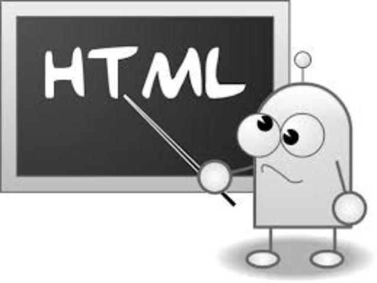

Bienvenidos estoy aprendiendo
esto es otro emcabezado
estoy practicando con las etiquetas de html
aqui hay una lista desordenadas
uno
dos
tres
aqui hay una lista ordenadas
uno
dos
tres
esto es una lista de descripcion
HTML
Un lenguaje de marcado utilizado para crear páginas web.
CSS
Un lenguaje de diseño usado para estilizar páginas web.
JavaScript
Un lenguaje de programación que permite agregar interactividad a una página web.